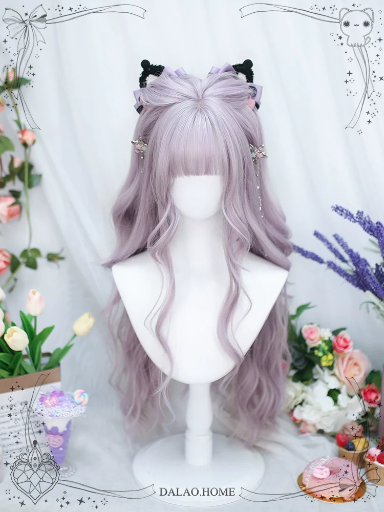
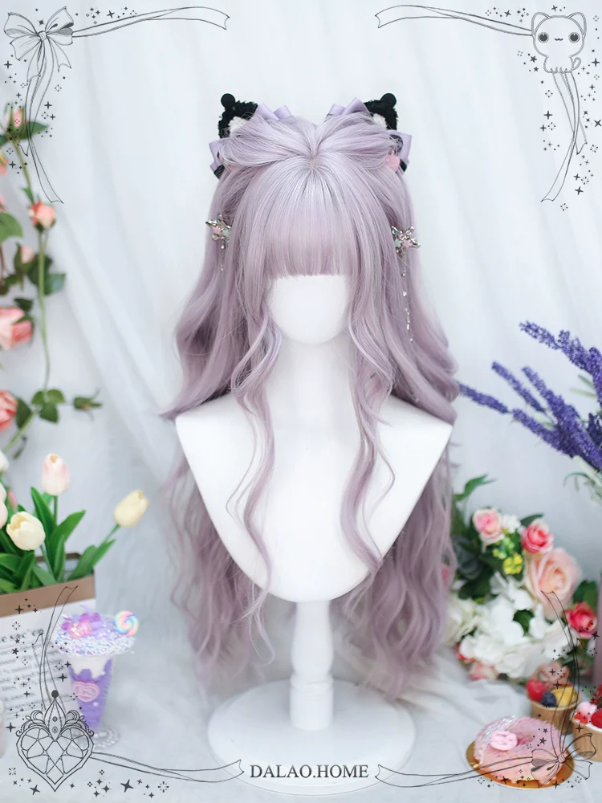

Blog Post: Demon Huntress cosplay Log
Started: 3/2/2024 | Last Updated: 8/5/2024
This will be a continuously-updated log of the creation of my Demon Huntress cosplay from Love Nikki
Step 1: Planning
Date: 2/21/2024
I tend to have a ton of art ideas and desires spinning around my head at all times, and when they finally collide, I can start a new project. The ideas I had that made up this project were:
- I want to sew my own lolita JSK (jumperskirt, basically a sleeveless dress with a blouse underneath)
- I want to wear more lolita to cons
- I want to cosplay a Love Nikki suit
The force that finally combined all three ideas was going to Katsucon 2024 and being super inspired to jump back into making cosplays, especially outfits from more obscure fandoms. I was brainstorming ideas and hit upon one I really wanted to do: the Demon Huntress suit from Love Nikki.
I don't actually play Love Nikki anymore, but played for YEARS (at least all throughout college, so approx four years) and the Demon Huntress suit is super iconic AND gothic lolita. The brand Nikki Tomorrow actually already put out an official Demon Huntress set, but I wasn't a huge fan of how it looked (it's missing the horns and eyepatch!) and of course, part of the appeal was making the JSK part on my own. However, I also wasn't planning on making a super accurate reproduction. I'm a big fan of "making the cosplay fit you, not making you fit the cosplay" and since I'm not THAT good of a sewist yet, so I knew it wasn't going to look good unless I simplified it a little and bought some of the accessories.
Therefore, this is the plan I came up with. The main changes are making the JSK only one layer instead of the 3 layers in the original skirt and buying some of elements over making them (specifically the blouse, shoes, veil, corset, and umbrella).
I started planning on Feb 21
Step 2: JSK Mockup
Date: 2/28/2024
I was originally looking through scans of the Gothic Lolita Bible (and other Lolita sewing books) to find a JSK pattern I wanted to use, but found that none of them matched the image in my head, and it'd be easier to draft it on my own. I wanted a rectangle skirt with a single ruffle, a bodice with princess seams and a shirred back.
I started constructing the mockup for the JSK on Feb 25. The bodice was copied off a Kaneko dress I own -I vaguely eyed the shapes, which is why it doesn't fit nearly as well, but it was really useful for figuring out how to partially line it. The skirt is just a rectangle, 3x as wide as my waist and pleated. I still am proud of how it looks, and honestly I'm going to wear it as a regular JSK in the summer! For the final dress, I'm going to make the shirring panel wider (right now it's a little tight), the bodice longer, and the neckline lower.

Step 3: Custom printed fabric
Date: 3/12/2024
One of the main things I was excited to do was to design a border print for the skirt! The official art is not super high-def, which is nice because I can make up a bunch of stuff. The above image is what the final file looks like- hoping the final printed fabric looks good!
Step 4: Buy a bunch of accessories and redo custom printed fabric
Date: 4/5/2024
Alright it's been 3 weeks since my last update and a bunch of stuff happened.
First, custom printed fabric! I initially decided to go with Spoonflower (well-known custom print fabric service, I got a sample pack from them). It did not turn out well- partially due to me but I'm also bitter at the company. My mistake: I mis-measured and the print printed way too large. Spoonflower's mistake: The fabric was way stiffer than the sample- the dark ink must have done that to the fabric, because the unprinted edges feel soft. I later learned that covering fabric with ink can make it stiff like this, but it feels misleading for the sample sample print to be mostly white/unprinted, which gave it a completely different texture. For a custom print service... why wouldn't you send a more representative sample? Especially since I bet it's more common for people to print in non-white than white? Not to mention it was pretty expensive, especially because I splurged on the softer cotton poplin. This fabric is going to be muslin for future projects.
I ended up printing my fabric again with Little Cocalico. They had waaaay more fabric options and the per-yard price is actually a little cheaper than Spoonflower's. I got the organic brushed cotton because the soft surface feeling reminded me of a velvet JSK I own and was fun to touch. The result was better because I measured well this time haha. It is still stiffer than the sample, but was far from unusable and got much better after washing!
I also ordered a bunch of accessories from 42lolita! This cosplay wasn't specifically an excuse to buy a bunch of accessories for my normal lolita wardrobe, but it's a nice side benefit. I am especially excited for the shoes because I've wanted them for a while!
 

Also I know this isn't news to most lolitas, but man I'm really happy with the service for this order too! I got the wig from their 'Buy For Me' program (as in, I sent a picture in for them and asked if they could find it) and it was added to their store in a day. They were also out of stock of the parousel I got, but notified me right away and found several new ones at a similar price point/appearance for me to choose between (The one pictured is the original one I wanted, the new one doesn't have the ruffles). 10/10 experience!
Step 5: Finish making accessories
Date: 5/26/2024
This cosplay has a LOT of accessories, but they were soooo fun to make.
The lace I used for all of these is from ivyverynice on Etsy- it's so nice and soft and matches the pointy lace on my Infanta blouse super well! The horns on the headpiece were 3d printed from this model by amandadinosaur on Thingiverse. They were a pain to attach since I'm bad at using 2-part epoxy but I'm SUPER proud of how they came out, and they feel sturdy! (hopefully they are)
I just finished the corset today and I'm SO excited to show it off! I was originally going to buy it but after looking around and not finding anything I liked, I decided to finally jump in and ry to make one. The pattern is modified from the Lolita corset by Aranea Black (I believe their site is no longer online, but someone posted all their patterns on Reddit). Specifically, I cut off everything from the waistline below to match the original outfit, and added a bunch of embellishments. The corset looks so good with some of my everyday outfits (maybe this will become part of my regular wardrobe???) and I have so many zip ties left from boning that I might...make more....
I actually finished the JSK a few weeks ago (before starting the accessories) but I put it through the wash, it got wrinkly, and I'm not motivated to steam it just to fold it back in my closet right after... I'll post a pic when I can do a full cosplay test!
The images used in these composites are all from the Smithsonian open access program!
Step 6: Otakon Debut!
Date: 8/3/2024
Woah debut time! This is also my first time wearing everything together!


{kind=link}
Some notes on the wearing experience
- Everything fit well and most parts were comfortable and easy to put on!
- The shoes are beautiful but are NOT meant for walking on an entire con day- my feet were destroyed by the end (should have expected this lol)
- This was my first time wearing falsies! They are SUPER nice and honestly kinda makes me wanna wear them more. It was really funny to only have them on one eye though
- No one recognized me (expected) but got a lot of compliments anyway! I love attention
Retrospective: Good, keep for next time:
- Buying and using actual lolita pieces in the cosplay: It was a good excuse to get pieces and now I can use them in other looks
- Adding beautiful lace to the accessories: I think it made the accessories look super beautiful and I can't wait to use the rest on other projects!
- The JSK: Very proud of how it came out, especially given it's self-drafted
Retrospective: Improve for next time:
- The JSK: The fit is not perfect yet, the bodice is a little tight. It's not bad when it's on, but it's difficult to put on and take off
- Fabric printing: Honestly the biggest stumbling block. Even using Little Cocalico instead of Spoonflower, the fabric still feels crunchy and cheap because of the amount of ink needed to print a dark print on it. Also it was very expensive. If I want to do custom print fabric again, I have to be careful about the design and what I choose to use it for.